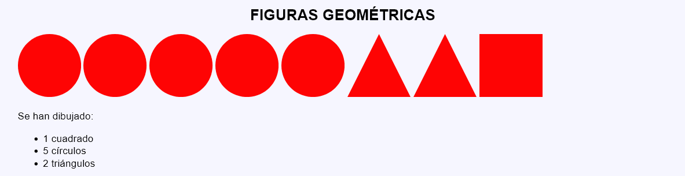
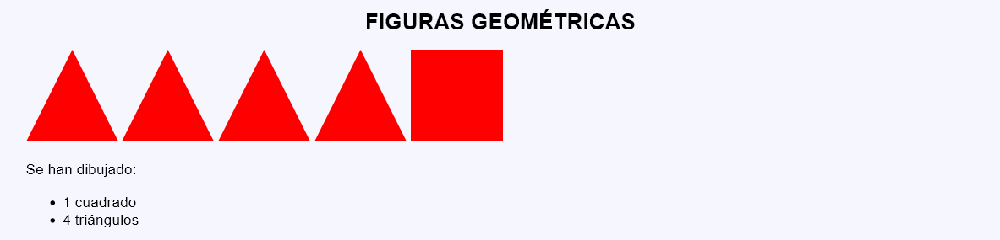
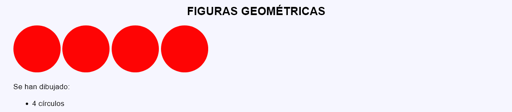

En este ejercicio se debe crear un programa que muestre varias figuras geométricas (círculos, cuadrados y triángulos) e indique la cantidad de fuguras mostradas.



<p>
<svg version="1.1" xmlns="http://www.w3.org/2000/svg" width="100" height="100" viewBox="0 0 100 100">
<polygon points="0,100 100,100 50,0" fill="red" />
</svg>
<svg version="1.1" xmlns="http://www.w3.org/2000/svg" width="100" height="100" viewBox="0 0 100 100">
<circle cx="50" cy="50" r="50" fill="red" />
</svg>
<svg version="1.1" xmlns="http://www.w3.org/2000/svg" width="100" height="100" viewBox="0 0 100 100">
<rect x="0" y="0" width="100" height="100" fill="red" />
</svg> </p>
<p>Se han dibujado:</p>
<ul>
<li>1 cuadrado</li>
<li>1 círculo</li>
<li>1 triángulo</li>
</ul>